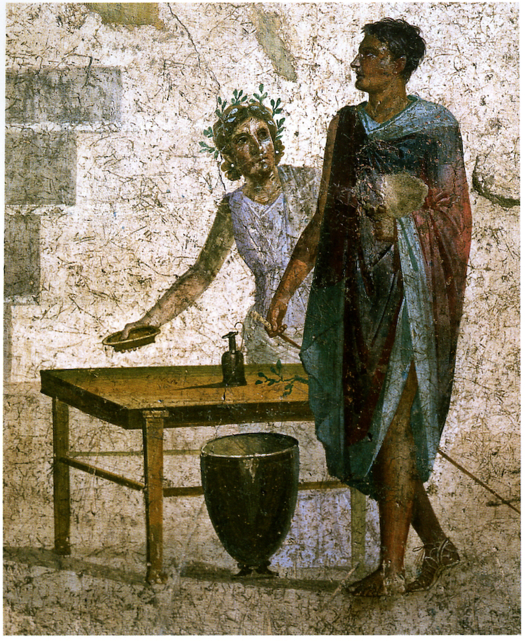
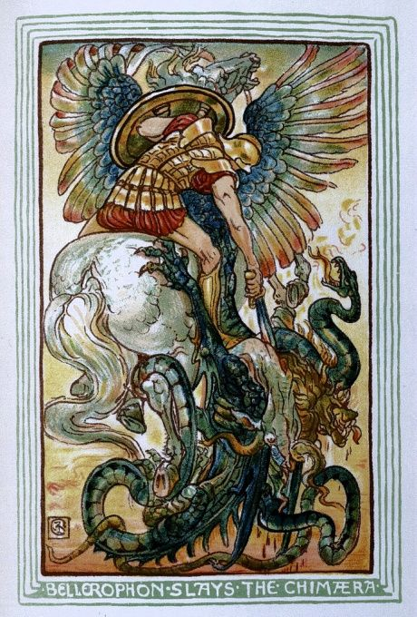
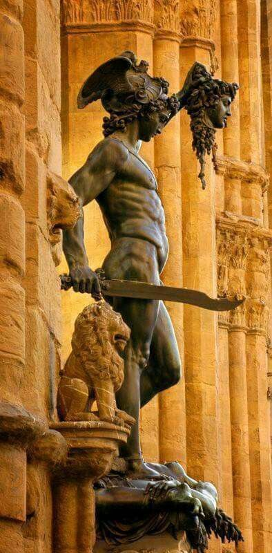
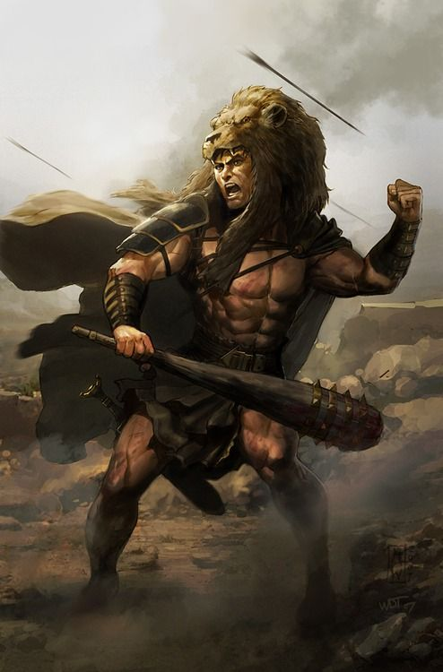

Alguns dos principais heróis gregos que protagonizam as lendas e histórias mais famosas da mitologia são:
Teseu: conhecido por ter vencido o minotauro no labirinto criado pelo rei Minos, em Creta. Com a vitória, Atenas passou a se livrar das cruéis imposições feitas por Minos (oferecer anualmente 14 jovens atenienses — 7 rapazes e 7 moças — para serem devorados pelo minotauro).

Jasão: protagonista da história que narra a aventura do herói em companhia dos argonautas em busca do “velo de ouro”. Na narrativa, Jasão e seus companheiros tiverem que enfrentar vários monstros e seres mitológicos, além da ira de alguns deuses.
Belerofonte: ficou conhecido por derrotar a Quimera — criatura mística híbrida — e dominado o lendário Pégaso, graças a rédea de ouro oferecida pela deusa Atena, como símbolo de gratidão por destruir a Quimera.
Perseu: Perseu conseguiu derrotar a Medusa, cortando a sua cabeça e evitando que se transformasse numa estátua de pedra.
Herácles: popularmente mais conhecido por Hércules (nome dado na mitologia romana), este semideus (filho de Zeus) é conhecido pela história de seus 12 trabalhos impossíveis.
